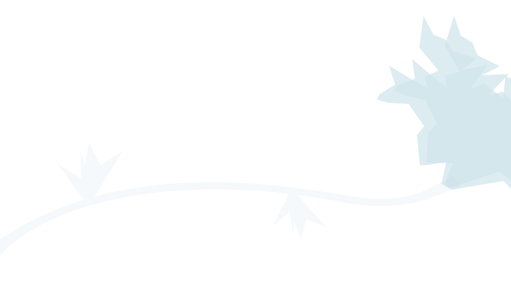

ИСТОРИЯ
Мы выращиваем красоту из стекла и устраиваем выставки в разных странах уже 22 года.
За это время мы продлили жизнь планеты на 3 недели, лишь благодаря сбору битого стекла.


2003
год
2007
год
2015
год
2025
год
создание маленького «Cада второй жизни» в Подмосковье
открытие главной выставки стеклянных цветов в Москве
сотрудничество с Казахстаном, Финляндией, Италией
«Cады второй жизни» в разных странах, тысячи посетителей